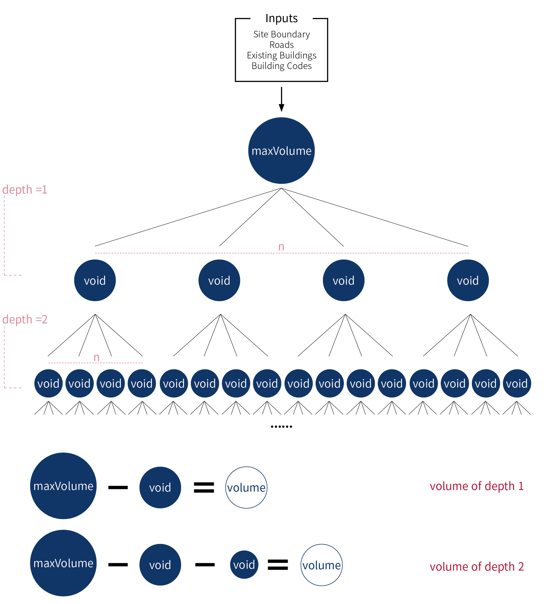

Massigner is a kind of a prototype of Grasshopper Plug-in, searching an optimized volume responding to given context. The result of this software is a mass within the boundary. But this mass cannot be the result of the design. It is a starting point of design. The mass produced by the building codes and void options are available to suggest a designer which volume is proper, economical, and efficient. However, architectural projects are enough complex to consider various values and contexts. In extreme cases, this program just provides variations and decreases repetitive process. Also, it is based on conventional frames of design process which will not be changed vastly. Thus, users need to translate the result into the real spaces. Instead of using it as a direct result-making tool, using it as exploring tool to free the consciousness of concept design would be better. Through the massive amount of variations, designers can broaden their design preceptions.
This version is Tree Search version. If you want to explore GA (Genetic Algorithm) version, click the link here.
Why do archictects need massigner?Efficiency, Design Starting Point. Regular projects such as house and housing, contrasting the monumental design projects, are sometimes underestimated. However they are significantly important to manage the office in practice as a main source of budget for keeping office scale and primary basis of architectural office. Especially, mid and small sized business, handling this regular project efficiently is important not only to get stability of setting office and keeping office, but also to have enough office resources and time for focusing monumental one, which requires more creative process. Nowadays many architectural offices spend unefficiently their resources to start their design in regular projects; almost similar approaches to analyze conditions, to find proper shapes. While I am doing regular projects (especially housing), I realized that even though they have different sites, their conditions, and contexts, there are some processes which can be seemed repetitive and patterned. Sometimes these processes are handled by internship staff or junior architects, disproving they are not requiring serious creativity in regular project, but necessary for the whole projects. However, instead of having attitude these processes are bothersome and something they have to do, architects can find more meanings to support their creativity efficiently if they can automate them. Automation means not only to give results from automated generation or operation, but also tool to free us from creating something repetitive in process, leading them to broaden their horizon of design.
How does massigner help architects? Exploring Tool. The result of this software is a mass within the boundary. But this mass cannot be the result of the design. It is a starting point of design. The mass produced by the building codes and void options are available to suggest a designer which volume is proper, economical, and efficient. However, architectural projects are enough complex to consider various values and contexts. In extreme cases, this program just provides variations and decreases repetitive process. Also, it is based on conventional frames of design process which will not be changed vastly. Thus, users need to translate the result into the real spaces. Instead of using it as a direct result-making tool, using it as exploring tool to free the consciousness of concept design would be better. Through the massive amount of variations, designers can broaden their design preceptions.
How does massigner work? Variations Based on Voids. This software is composed of four parts. One is inputs containing site information by geometries and numbers. Next one is processing part. In this step, actual generation will be operated based on data structure. Third one is post- processing, searching all results and with comparison of building codes resulting a volume. The last part is output of search result. First of all, massigner is operated based on Rhino3D and Grasshopper. Users need to make a site map using rhino geometires, such as polylines and lines. Most important part is to make a boundary curve, which should be closed. Also, distinguishing site's near road curves is required. After set the all curves and building codes data properly, these data will be transferred to processing parts. In this parts, user can gain the information related to sites, such as limitation of available construction area, each line defined by each building code, a maximum volume and so on. Using the data generated by site information, processing part generate the voids volumes randomly and store them each node of tree structure. Results of the process is the volumes subtracting each depth's voids. With these results, massigner can find proper mass in post processing. Searching all volumes' BLR and FAR, and comapring them to their limitation numbers. Also, massigner has 'array' functions, helping designers watch all results systematically. The result of post processing is not optimized volume, but the volume with the closest BAR and FAR number.

Basic data structure of massigner is 'tree'. The root is maximum volume (maxVolume) found by the pre-setting step. Each depth has n number void, generated randomly within the maximum volume boundary. With boolean difference calculation, users can see each depth's volume.
What kinds of potentials of massigner? Not Only Mass, But Also Space. Still massigner has many points to be improved and developed. But its potential is clear. Not only the automation of architectural works but also providing a design starting point. Through improving the limits mentioned above, massigner would be polished and better. Furthermore it is based on Grasshopper, it could have a wide compatibility, not staying just generating masses. It could be integrated with other plug- in of Rhino3D and Grasshopper. For example, with VisualArq©, it is possible to translate the mass from massigner to space using VisualArq BIM components. Being integrated of BIM tool is the ultimate goal of massigner. However, to translate the space is careful because massigner can constraint too much the design creativity.